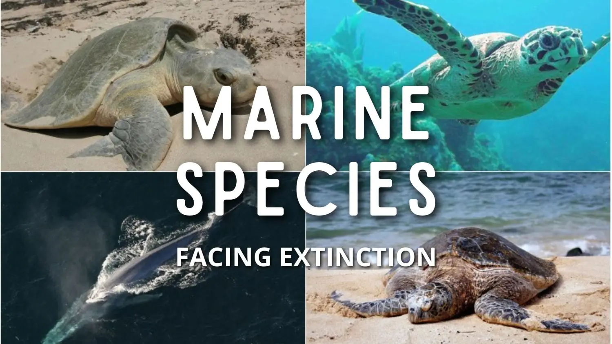
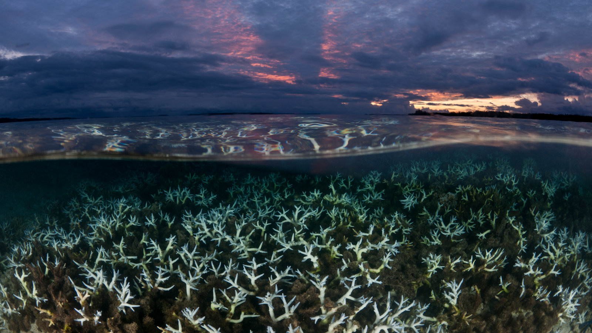

At SaveTheOceans, we run various campaigns aimed at protecting and restoring our ocean ecosystems. Explore our current initiatives and discover how you can get involved.
Campaign List Section
Clean Seas Initiative

- Overview: Join us in the fight against ocean pollution! Our Clean Seas Initiative focuses on organizing beach clean-ups, educational workshops, and partnerships with local businesses to reduce plastic use.
- How to Get Involved: Sign up for our next beach clean-up event or donate to support our clean-up efforts.
Coral Reef Restoration

- Overview: Coral reefs are vital to marine biodiversity. Our restoration project involves planting new corals and monitoring reef health to ensure their survival.
- How to Get Involved: Volunteer for our planting days or sponsor a coral colony to help us restore these beautiful ecosystems.
Ocean Literacy Program
- Overview: Education is key to conservation. Our Ocean Literacy Program provides resources for schools, community groups, and families to learn about marine ecosystems and the importance of conservation.
- How to Get Involved: Access our free educational materials or host a workshop in your community.
Endangered Species Protection
- Overview: Many marine species are at risk of extinction. This campaign focuses on advocacy, research, and direct action to protect endangered species like sea turtles and sharks.
- How to Get Involved: Participate in awareness events, adopt an endangered species, or contribute to our research funding.
Plastic-Free Oceans Challenge
- Overview: Join our month-long challenge to reduce plastic use in daily life. Share your progress, tips, and tricks for living sustainably while inspiring others to do the same.
- How to Get Involved: Sign up for the challenge, share your journey on social media, and use our resources to help others reduce plastic waste.
Ocean Health Monitoring Program
- Overview: Monitoring ocean health is essential for conservation. This campaign involves citizen scientists in data collection to assess water quality, marine life, and ecosystem health.
- How to Get Involved: Become a citizen scientist by joining our monitoring events, or learn how to conduct simple tests in your local waters.
Marine Protected Areas Advocacy
- Overview: Protecting areas of the ocean from human activities is crucial for marine life. We advocate for the establishment and maintenance of Marine Protected Areas (MPAs).
- How to Get Involved: Join our petition, attend public meetings, or participate in advocacy training to help us push for policy changes.
Climate Action for Oceans
- Overview: Climate change poses a significant threat to our oceans. This campaign focuses on raising awareness and advocating for policies that mitigate climate change and protect marine environments.
- How to Get Involved: Attend our climate action events, join our advocacy efforts, or participate in educational seminars to learn more about the impact of climate change on oceans.
Call to Action: Ready to make a difference? Join one of
our campaigns today! Together, we can create lasting change for our
oceans.